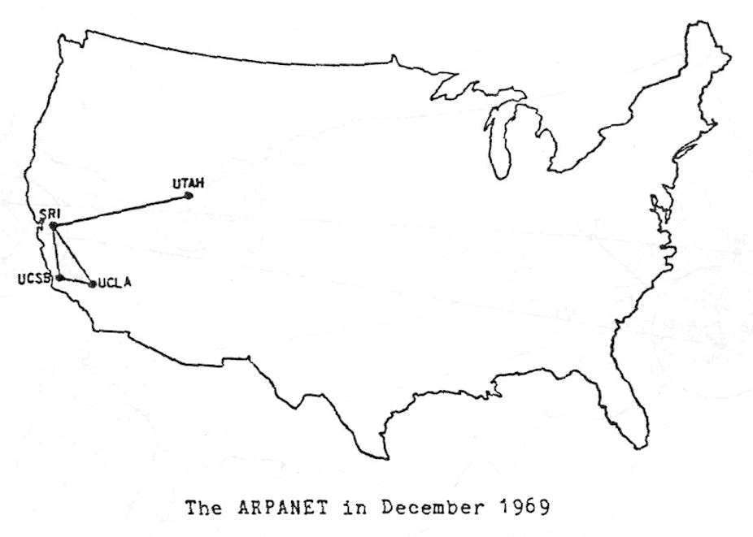

Depois da Segunda Guerra, EUA e URSS começaram a ter seus desentendimentos,
dando origem à Guerra Fria em 1949. Neste contexto, em que os dois blocos
ideológicos e politicamente antagônicos exerciam enorme controle e influência no
mundo, qualquer mecanismo, qualquer inovação, qualquer ferramenta nova poderia
contribuir nessa disputa liderada pela União Soviética e pelos Estados Unidos: as
duas superpotências compreendiam a eficácia e a necessidade absoluta dos meios de
comunicação.
Nessa perspectiva, o governo dos Estados Unidos temia um ataque russo às bases
militares. Um ataque poderia trazer a público informações sigilosas, tornando os EUA
vulneráveis.
Então foi idealizado um modelo de troca e
compartilhamento de informações que permitisse a
descentralização das mesmas. Assim, se o Pentágono
fosse atingido, as informações armazenadas ali não
estariam perdidas. Era preciso, portanto, criar uma rede,
a ARPANET, criada pela DARPA, sigla para.
O ataque inimigo nunca aconteceu, mas o que o Departamento de Defesa dos Estados
Unidos não sabia era que dava início ao maior fenômeno midiático do século 20', único
meio de comunicação que em apenas 4 anos conseguiria atingir cerca de 50 milhões
de pessoas.
O começo de tudo
A ARPANET funcionava através de um sistema conhecido como chaveamento de
pacotes, que é um sistema de transmissão de dados em rede de computadores no
qual as informações são divididas em pequenos pacotes, que por sua vez contém:
trecho dos dados
o endereço do destinatário
informações que permitiam a remontagem da mensagem original.
Em 29 de Outubro de 1969 ocorreu a transmissão do que pode ser considerado o
primeiro E-mail da história. O texto desse primeiro e-mail seria "LOGIN", conforme
desejava o Professor Leonard Kleinrock da Universidade da Califórnia em Los Angeles
(UCLA), mas o computador no Stanford Research Institute, que recebia a mensagem,
parou de funcionar após receber a letra o.

Já na década de 1970, a tensão entre URSS e EUA diminui. As duas potências entram
definitivamente naquilo em que a história se encarregou de chamar de Coexistência
Pacífica. Não havendo mais a iminência de um ataque imediato, o governo dos EUA
permitiu que pesquisadores que desenvolvessem, nas suas respectivas universidades,
estudos na área de defesa pudessem também entrar na ARPANET.
Com isso, a ARPANET começou a ter dificuldades em administrar todo este sistema,
devido ao grande e crescente número de localidades universitárias contidas nela.
Dividiu-se então este sistema em dois grupos, a MILNET, que possuía as localidades
militares e a nova ARPANET, que possuía as localidades não militares. O
desenvolvimento da rede, nesse ambiente mais livre, pôde então acontecer. Não só os
pesquisadores como também os alunos e os amigos dos alunos, tiveram acesso aos
estudos já empreendidos e somaram esforços para aperfeiçoá-los.
Já na década de 70, depois da abertura da rede para pesquisadores
Além desses backbones, existem os criados por empresas particulares. A elas são
conectadas redes menores, de forma mais ou menos anárquica.
É basicamente isto
que consiste a Internet, que não tem um dono específico.
Com a entrada de muitos pontos na rede e com métodos de
comunicação diferentes entre eles, alguma atitude tinha que
ser tomada, já que o antigo protocolo NCP já não estava mais
aguentando. Robert Kahn da DARPA e ARPANET recrutaram
Vint Cerf da Universidade de Stanford para trabalhar com ele
nesse problema. Em 1973, eles logo trabalharam com uma
reformulação fundamental, onde as diferenças entre os
protocolos de rede eram escondidas pelo uso de um protocolo
inter-redes comum, e, ao invés da rede ser a responsável pela
confiabilidade, como no ARPANET, os hospedeiros ficaram como
responsáveis.
A especificação do protocolo resultante contém o primeiro uso atestado do termo
internet, como abreviação de internetworking; então a palavra começou como um
adjetivo, ao invés do nome que é hoje. Com o papel da rede reduzida ao mínimo,
ficou possível a junção de praticamente todas as redes, não importando suas
características, assim, resolvendo o problema inicial de Kahn. O DARPA concordou em
financiar o projeto de desenvolvimento do software, e depois de alguns anos de
trabalho, a primeira demonstração de algo sobre gateway entre a rede de Packet
Radio na Baía de SF área e a ARPANET foi conduzida. Decorrentes das primeiras
especificações do TCP em 1974, TCP/IP emergiu em meados do final de 1978, em
forma quase definitiva. Em 1º de janeiro de 1983, data conhecida como Flag Day, o
protocolo TCP/IP se tornou o único protocolo aprovado pela ARPANET, substituindo o
antigo protocolo NCP.
O cientista Tim Berners-Lee (foto ao lado),
do CERN, criou a WWW, a
linguagem HTML e o protocolo HTTP em
1992. Essa linguagem simples, mas eficiente,
era usada para a criação dos sites com o
conceito de hipertexto (documentos ligados
entre si).
A empresa norte-americana Netscape criou o
protocolo HTTPS, possibilitando o envio de dados
criptografados para transações comercias pela
internet.
.jpeg)
.jpeg)
.jpeg)
.jpeg)